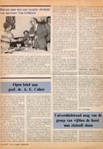
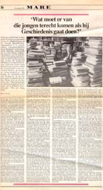

De verandering waargenomen
A.E. Cohen als historicus en universitair bestuurder
Tentoonstelling in de Universiteitsbibliotheek te Leiden, van 28 november 2003 tot en met 4 januari 2004.
Tentoongestelde stukken
11. Van rectoraat naar universiteitsraad
Op 1 september 1976 legde Cohen het rectoraat neer. Maar het besturen of meebesturen zat hem inmiddels in het bloed. Kritisch jegens de Universiteitsraad begon hij er zijn zogenaamde `groep-Cohen’ om voortaan een kritisch geluid van binnen de raad te kunnen laten horen.
| 11.1. Prof.Dr. A.E. Cohen:
`Het ligt in mijn karakter om de dingen intensief te doen’, Leidse
Universitaire Almanak 1976, p. 37-45.
¶ Vraaggesprek met het echtpaar Cohen bij het neerleggen van het rectoraat. – Een derde ambtstermijn? – Dat is uitgesloten, als ik met mijn vrouw getrouwd wil blijven en dat ben ik wel van plan. |
||
| 11.2. Aan de kiezers van de
nieuwe universiteitsraad, Acta et agenda, ?
¶ Kritische kanttekeningen bij het functioneren van de universiteitsraad, mede ondertekend door A.E. Cohen. |
||
| 11.3. Orde op zaken, Acta
et agenda : informatieblad der Leidse Universiteit, extra
uitgave.
¶ Rede uitgesproken als rector magnificus op 6 september 1976. Gedrukt samen met de erop volgende toespraak door K.J. Cath, `Zaken die aan de orde zijn’. Citaat: Herhaaldelijk en langdurig vergaderend met discussies waarin details, procedures en benoemingen onvevenredige aandacht krijgen, komt de raad over als een doel in zichzelf dat de doelmatigheid niet telt en de oogmerken van de democratisering niet bevordert, dat macht heeft maar gezag mist, vaak meer een actiegroep dan een bewind en juist daardoor als, vloek der vloeken, elitair, meer hiërarchisch ingesteld dan coördinerend, meer politiserend dan zakelijk’. |
||
|  | 11.4. M.J. Koornstra, `Open brief aan prof.dr. A.E. Cohen’, Acta et agenda, 5 mei 1977, 628. | |
| 11.5. Sprokkelingen van vrienden en magen : voordrachten, gehouden bij het afscheid van Prof. Dr. A.E. Cohen. D.J. Roorda e.a. (Leiden : Rijksuniversiteit Leiden, Subfaculteit der Geschiedenis, 1983) [UBL: 3907 E 31] | ||
| 11.6. Praatjes voor de schouw : door en aangeboden aan A.E. Cohen, rector magnificus, 4-9-1972 tot 6-91976 [door het College van Bestuur van de Leidse Universiteit, voorz.: K.J. Cath]. (Leiden, 1976). [UBL 2543 B 17] | ||
|  | 11.7. `Wat moet er van die
jongen terecht komen als hij Geschiedenis gaat doen’, Mare,
23 november 1989. [AEC]
¶ Zowel tijdens als na zijn rectoraat gaf Cohen interviews. De foto toont hem in zijn werkkamer thuis, aan de Van Brouchovenlaan. |
|
| 11.8. A.E. Cohen, geschilderd
door Marike Bok (olieverf op doek) [Akademiegebouw] |
||
| 11.9. Het college van bestuur. Van links naar rechts: K.J. Cath, AEC, J.K.M. Gevers, W.G. Koppelaars, H.H. Maas. Staand: de secretaris N.F. Hofstee. Geschilderd door Rein Dool, olieverf op doek (1,70 x 2,00 m.) [Akademiegebouw] | ||
| vorige pagina | volgende pagina |